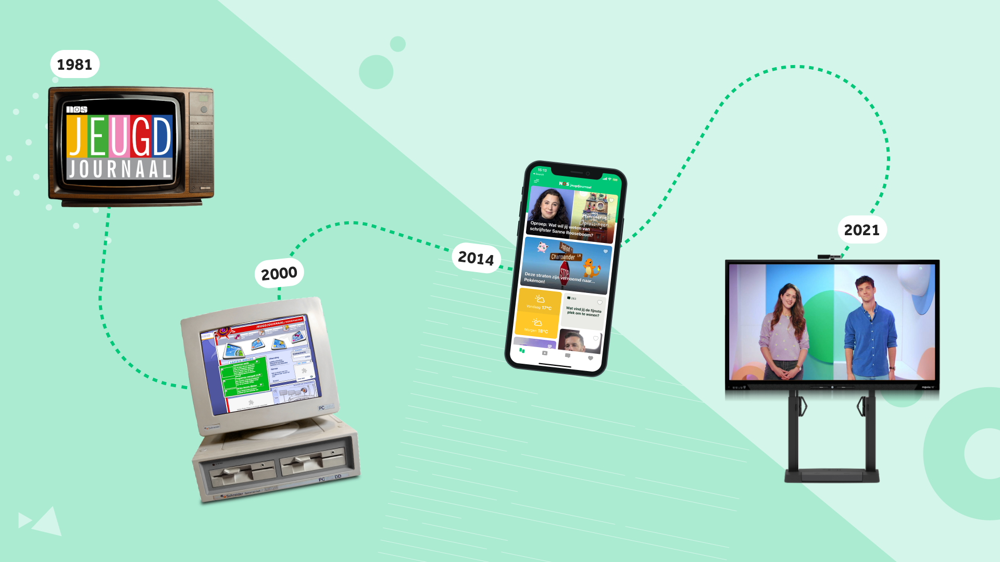
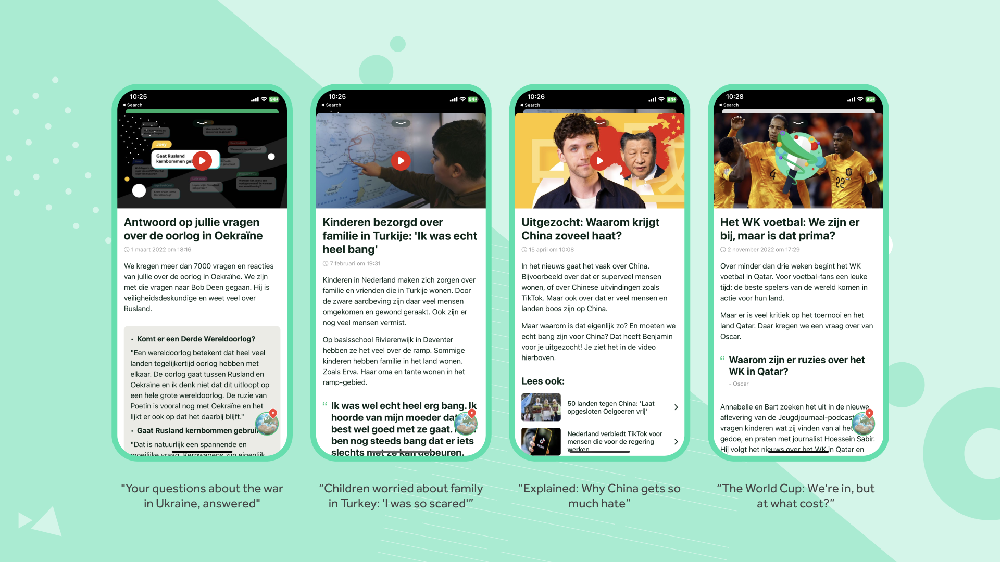
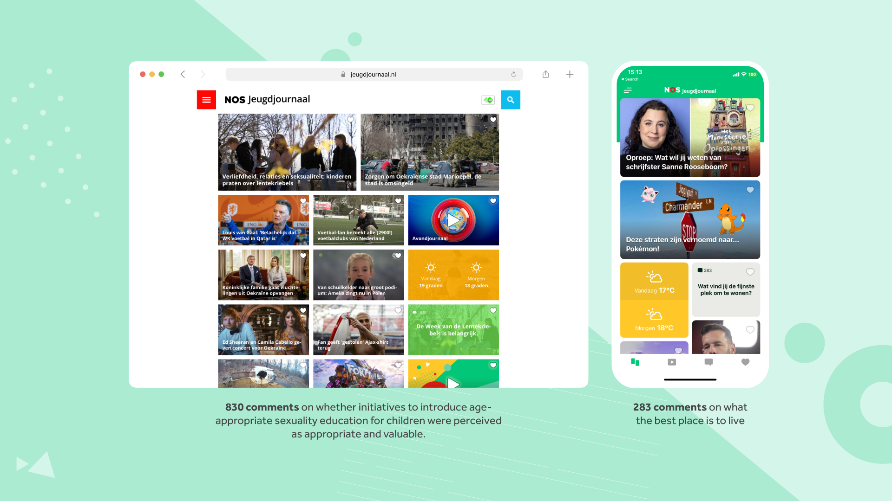
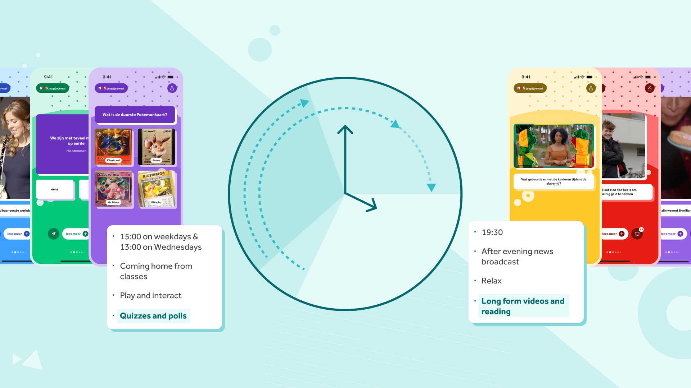
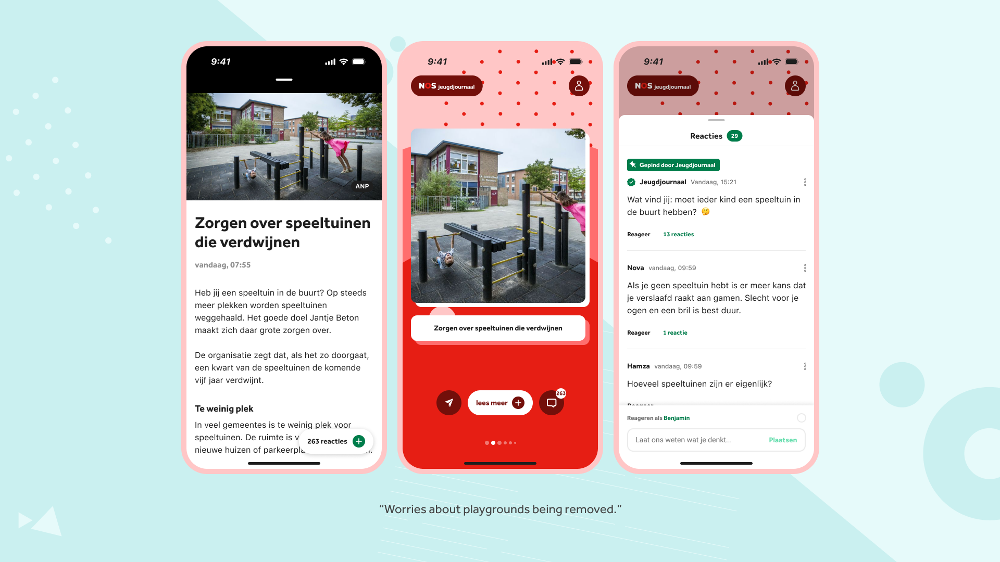
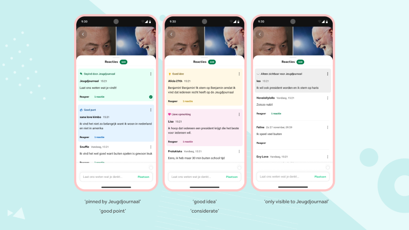

Reimagining How Children Experience the News
Redesigning the Jeugdjournaal app to create a more intuitive, accessible, and engaging news experience for young audiences

Problem
Jeugdjournaal had built a strong editorial reputation for delivering reliable, age-appropriate news to children in the Netherlands — yet it was becoming unclear whether the product was still meeting the needs of its young audience. As children's digital behaviour continued to evolve rapidly, the team recognised an opportunity to better understand what their audience needed from a news experience and how the platform could more effectively reflect the quality of the journalism behind it.
The central challenge was to deepen that understanding — designing an experience that would not only reach more children, but do so in a way that supported their news literacy, respected their cognitive development, and felt trustworthy to the parents, caretakers, and teachers around them.

Research
Design Sprint
A brainstorming session was facilitated with the Jeugdjournaal team, bringing together the head editor, online editors, and news reporters. The goal was to understand how public news broadcasters across Europe were approaching digital outreach to children, and to map out the capabilities within the Jeugdjournaal team to engage young audiences in the Netherlands in a meaningful and interactive way. A key insight from this session was that while the team's editorial process and way of working were already of a high standard, the product itself was not doing justice enough to their efforts.
Expert Interviews
Individual interviews were conducted with the product owners of the Danish children's news platform and the Dutch public broadcasting children's programming division, with the aim of learning from their experiences and outcomes. One of the most significant takeaways was that the word "news" can carry a serious connotation that does not always naturally attract children — unless they already have a personal connection to the subject or a strong affinity with the brand.
Additional interviews were held with academic researchers specialising in cognitive development and digital media, several of whom focused specifically on children. These conversations were essential in ensuring that the end product would not simply drive reach, but would also support news literacy — while remaining something that parents, caretakers, and teachers could feel comfortable with.
User Research
Individual interviews and focus group sessions were conducted with children between the ages of 11 and 12. Eight schools were visited across a range of settings — from cities to villages and across different educational systems — to ensure a broad and representative perspective. The research aimed to build a deeper understanding of how children use their phones and what they truly need from a news experience.
Alongside the interviews and focus groups, a product audit was carried out to identify what was already working well and should be preserved, as well as what had the potential to be brought more prominently to the foreground to better serve the audience.
Desk Research
To complement the primary research, a thorough review of literature on developmental psychology and the teenage brain was undertaken. This provided a stronger theoretical foundation for interpreting findings from the child interviews and for informing the validation of prototypes in later stages of the process.
Findings
Children
Children expressed a strong desire to participate in and contribute to the news. The reporters at Jeugdjournaal held a status similar to that of role models or idols in their eyes, which created a natural motivation to engage and be heard.
Jeugdjournaal team
The editorial team actively welcomed and celebrated any form of participation from their young audience. Children's contributions played a direct role in shaping content — comments and reactions from viewers were regularly incorporated into both the morning and evening news, with the morning broadcast in particular dedicating space to responses from children on current news subjects.

Jeugdjournaal app
- Articles varied significantly in content type, with some centered around text, others built around video, and others designed around interactive polls
- Video content spanned a wide range of formats, from long-form informational pieces and in-house productions to short-form snackable content
- Children frequently had questions about the topics they encountered but lacked a clear and accessible way to direct those questions to the editorial team
Solution
Curated News Flow
- Introduced a content-type hierarchy that surfaces the most prominent element of each article, giving children an immediate sense of what to expect
- Redesigned the article view to give each piece full focus, presenting one article at a time for a less cluttered, more immersive reading experience
- Developed a curated, balanced news flow with a defined endpoint — replacing the anxiety of an endless scroll with a sense of completion
- Created a time-of-day content model, tailoring the news experience to when and how children consume media throughout the day

Digital Comment Literacy
- Introduced a comment section across all articles, giving children a structured channel to ask questions and follow up on topics that sparked their curiosity. To ensure a safe and supportive environment, a dedicated team of online editors actively moderates all comments, ensuring that children are protected from harmful or inappropriate content and that the integrity of the article itself is never compromised.
- Before participating, children are required to read and agree to a set of house rules, establishing clear expectations around respectful and constructive engagement from the outset. Additionally, children are encouraged to create a username that does not directly reference their real name or surname — giving them the freedom to explore and experiment with commenting in a safe space, and allowing them to gradually develop their own voice and sense of comment literacy within a secure digital environment.

Areas to Explore
- Introducing accessibility-focused reading features to better support children who struggle with reading, with a primary focus on those with dyslexia and children for whom Dutch is a second language
- Developing a comment literacy framework by applying labels — such as "constructive comment" or "thoughtful comment" — to pinned comments, helping children understand and model the qualities of meaningful online discussion
